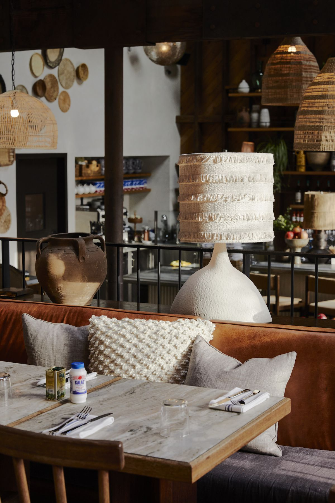
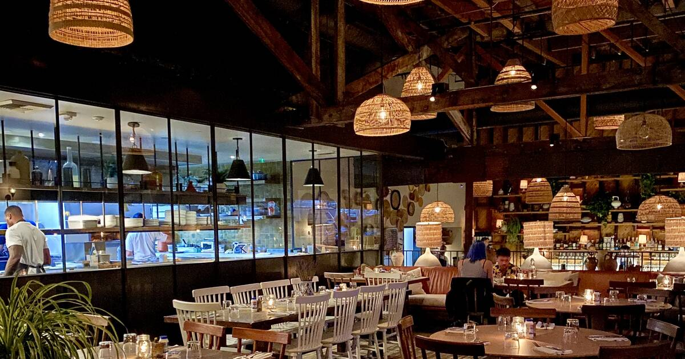
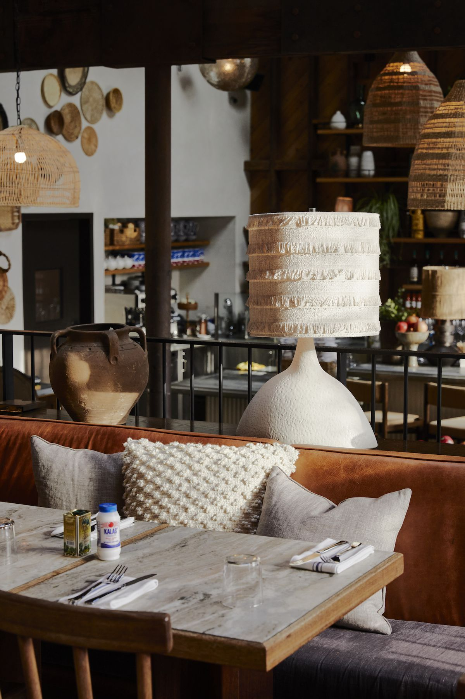
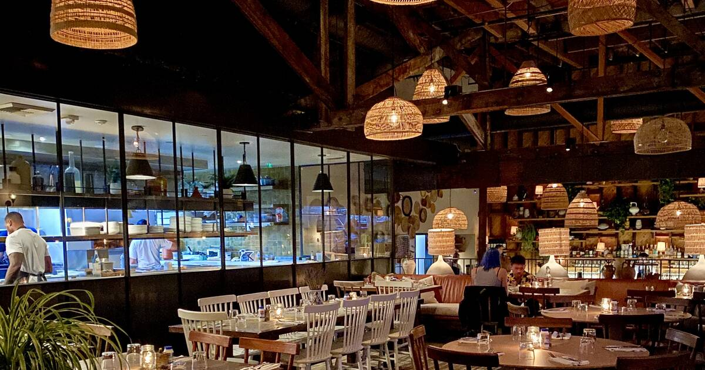

Restauranti nga Peja
STORIA JONË
Flo's Restaurant, e themeluar në vitin 2005, shpërthen si një ngjarje e pasur në historinë tonë. Ky restorant, me një përvojë që depërtonte në mbi një dekadë dhe gjysmë, është jo vetëm një perlë e kuzhinës sonë, por edhe një destinacion i preferuar për udhëtarët. Duke mbajtur me krenari vlerat tradicionale dhe duke shërbyer ushqime të shijshme, Flo's ka rrëmbyer vend në zemrat e të gjithë atyre që e kanë eksploruar. Me atmosferën e tij të ngrohtë dhe pamjen e mrekullueshme natyrore, Flo's Restaurant është një pjesë e mrekullueshme e historisë sonë, një rrëfim që vazhdon të zhvillohet me çdo vizitë.
RECETAT
Recetat tona nuk janë thjesht një kombinim i shijeve - ato janë një rrëfim i pasionuar që ka evoluar nga një pasion i thellë për shkencën dhe artin e gatimit. Çdo element i përdorur në gatim është zgjedhur me kujdes, duke përqafuar produktet e freskëta dhe sezonale për të siguruar cilësi të lartë në çdo pjatë.


AMBIENTI YNË
Restauranti ynë është një destinacion i veçantë në qytetin e Pejës, një oazë e shijes dhe relaksimit ku gastronomia e shkëlqyer bashkohet me një ambient të bukur dhe një kafe të ngrohtë. Korza e Pejës është vendi ku shijojmë të kemi një lidhje të thellë me natyrën dhe ku mikpritja e jashtëzakonshme është pjesë e identitetit tonë.Cilësia e ushqimit është në qendër të filozofisë sonë. Në menunë tonë gjeni një bashkim të kreativitetit, traditave lokale dhe përdorimit të produkteve të freskëta dhe cilësore. Përveç shijeve të pasura, ofrojmë një ambient të bukur, ku detajet janë përcjellë me kujdes dhe shijes. Kafetaria jonë, një hapësirë e veçantë brenda restorantit, është një vend ideal për t'i filluar ditën me një kafe aromatike dhe atmosferë të qetë.
 


